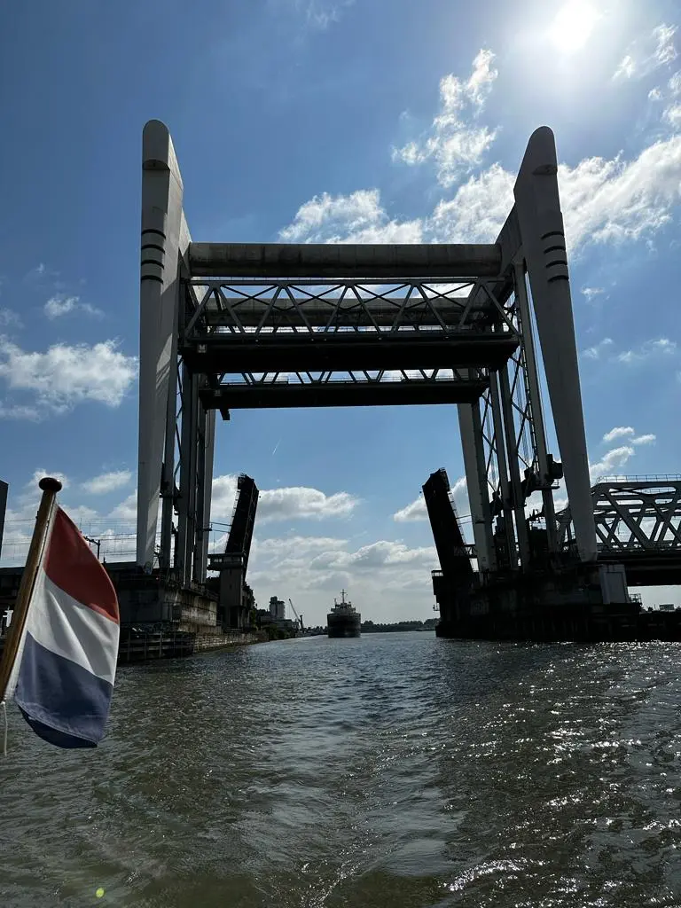
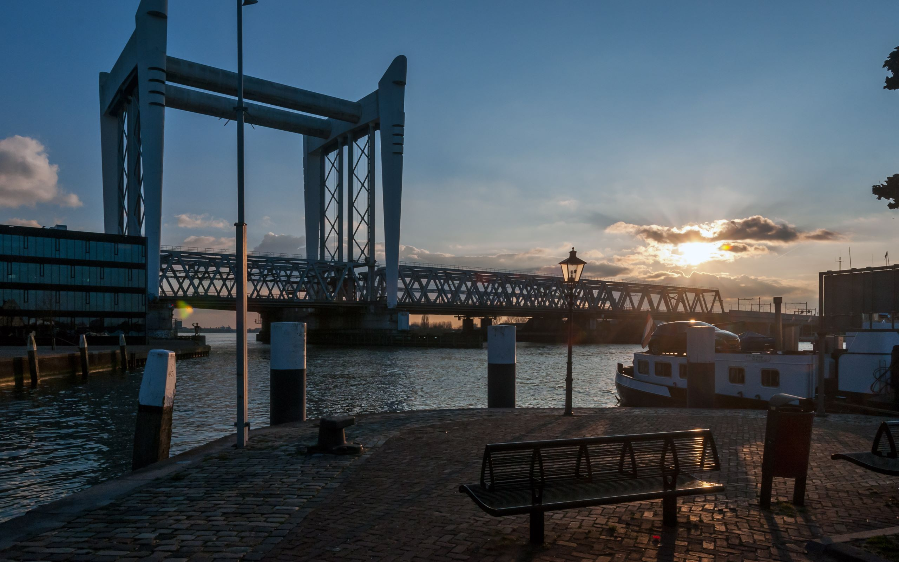
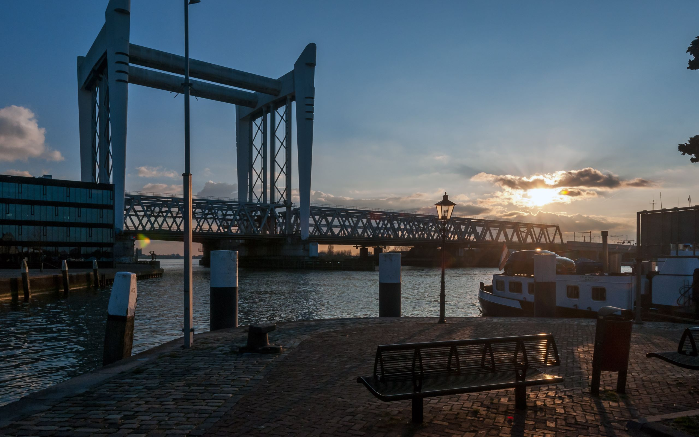
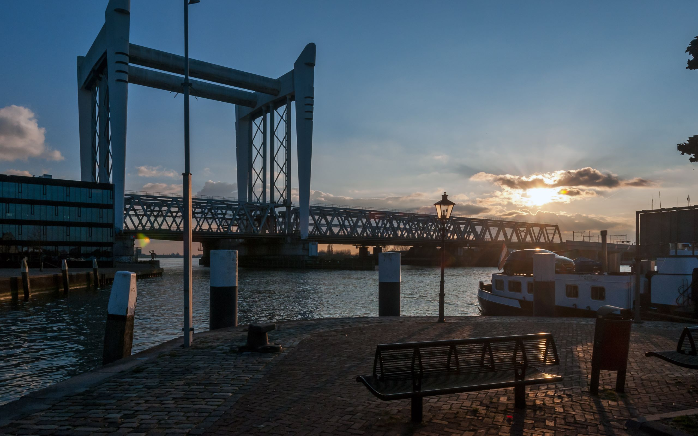

Monument Spoorbrug Dordrecht
Index
Galerij
Info
Galerij


Zie hier prachtige afbeeldingen van het Spoorbrug Dordrecht.
Geluidsfragment "Discussie huidige plannen Spoorbrug Dordrecht"
 
Zie hier prachtige afbeeldingen van het Spoorbrug Dordrecht.

Zie hier prachtige afbeeldingen van het Spoorbrug Dordrecht.